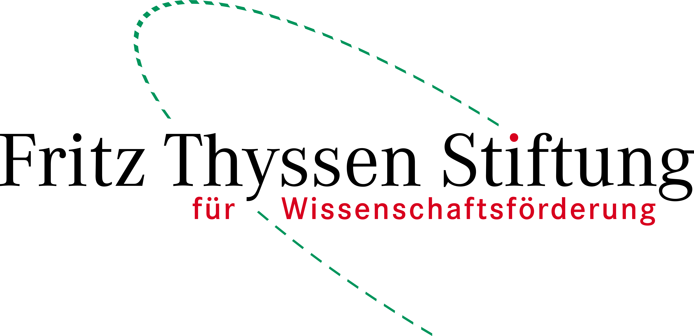

Mapping
the Canon
Quantitative Approaches to Literary History

Quantitative Approaches to Literary History
The literary canon shapes how literature is taught, studied, and remembered. Canonised works structure curricula, inform literary history, and become part of shared cultural reference systems. Yet canon formation is never neutral. Decisions about which texts receive sustained attention are shaped by institutions, markets, and broader social debates about value, authority, and representation.
In recent decades, research has shifted from asking which texts belong to the canon to analysing the processes through which works gain, maintain, or lose prominence. The rise of digital methods has expanded this perspective: large corpora and bibliographic data now allow scholars to trace patterns of reception, circulation, and institutional attention at scale.
This symposium brings together researchers from literary studies and the digital humanities to examine canon formation comparatively and methodologically. Its aim is to clarify key concepts, assess existing metrics, and move towards a more coherent and sustainable framework for future research.
Funded by the Fritz Thyssen Stiftung.

Technical University of Darmstadt
Room S3|12 12
Darmstadt, Germany
Judith Brottrager
judith.brottrager@tu-darmstadt.de